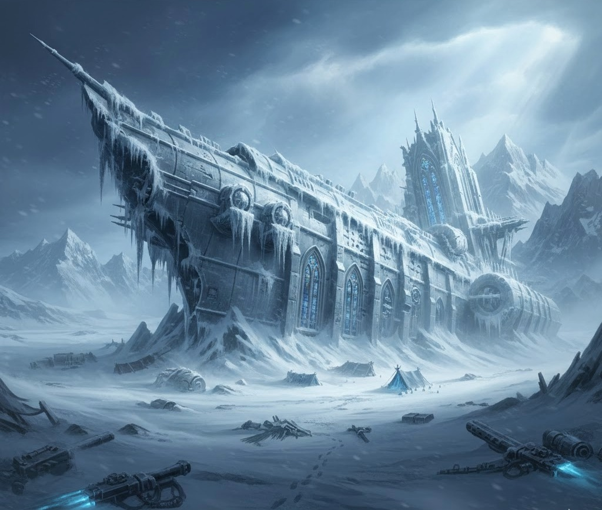
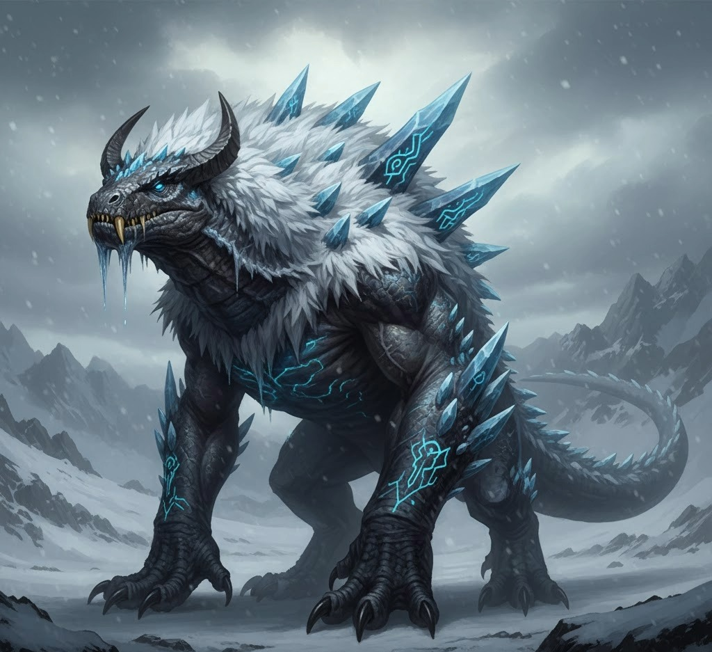
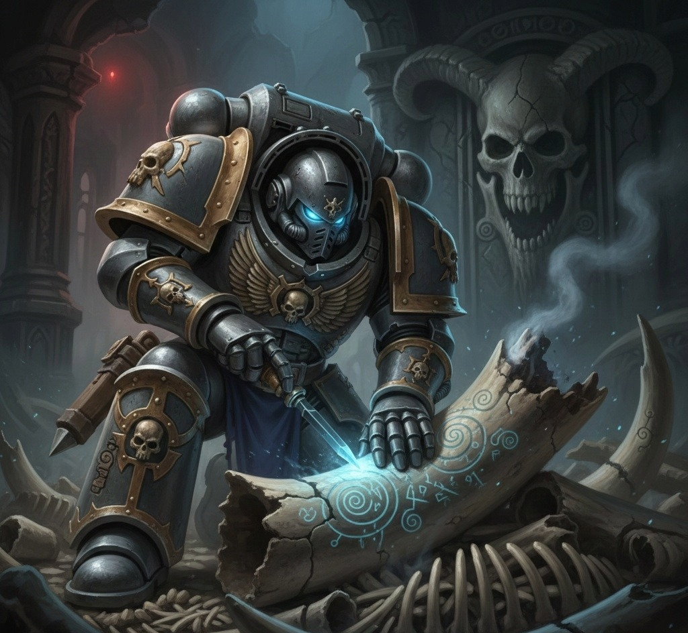
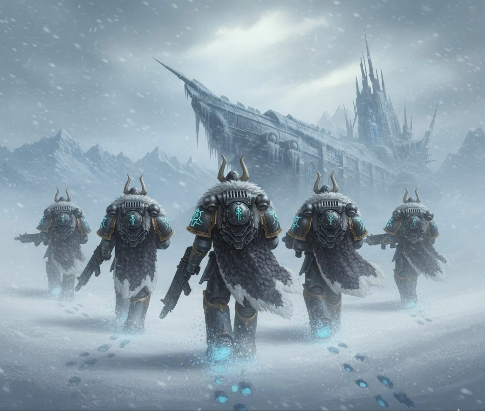

The Great Exile
In the silence of the permafrost, the only sound is the grinding of ice and the hum of dying power packs. When the Strike Cruiser Glacial Wrath was spat out by the Warp, the Grey Knights aboard didn't find a battlefield—they found a tomb.

Adapt or Perish
With no contact from Titan and the Imperium out of reach, the Wardens faced a choice: freeze in their gleaming silver armor or adapt to the world that claimed them. They looked to the wild beasts of the ice—the Permafrost Reptilians.

Hunting these titans became a necessity. The knights learned to carve psychic runes into the creature's bones, using them as focus points for their powers. They draped the thick, frost-resistant scales over their ceramite, creating a new form of armor that could withstand the absolute zero temperatures.

The Hunt Continues
Now, they are no longer just Grey Knights. They are the Wardens of the Frost. They hunt the shadows in the blizzard, their eyes glowing with cold psychic fire, waiting for the day the Imperium finds them—or the day the ice finally takes them all.

"Ice in the blood. Fire in the soul."